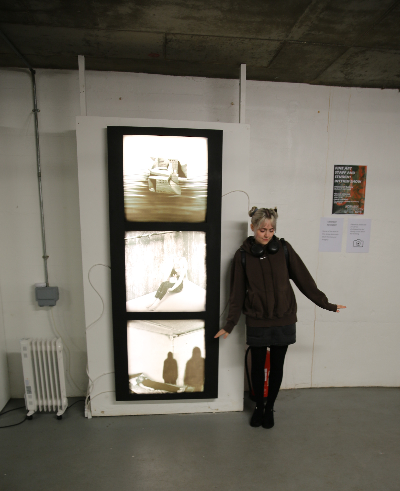
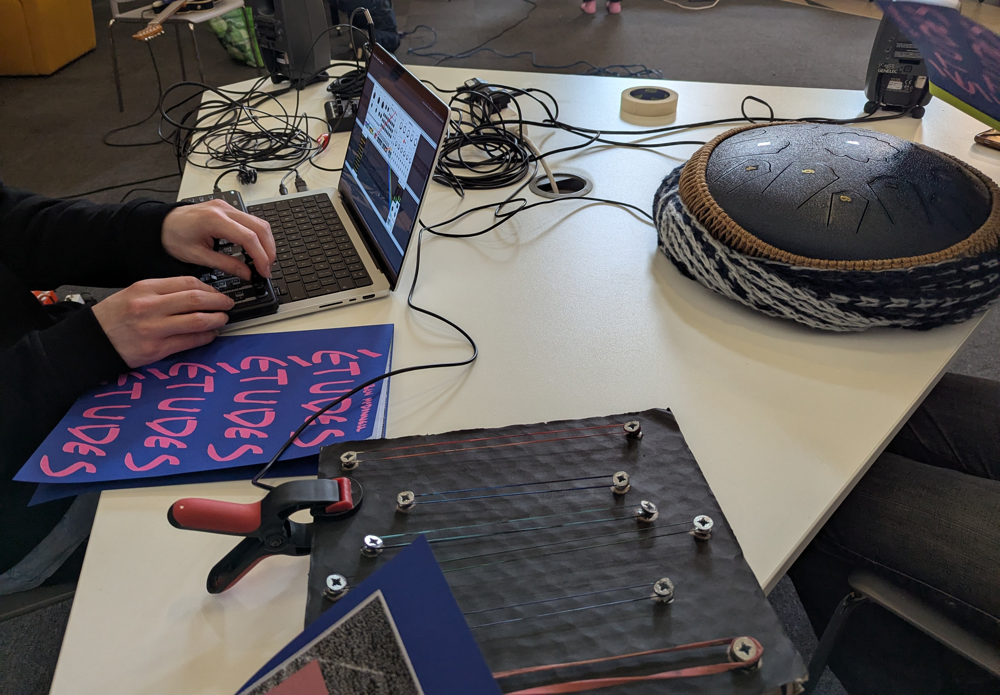

///
Amy Ruth is a multimedia artist and Fine Art graduate whose practice explores perception, psychology and the relationship between physical and digital experience. Working across photography, installation, video, creative computing and interactive processes, she creates immersive works that question how images, objects and technologies shape the way we interpret reality.
Her work often draws on surreal and uncanny visual language, using distorted imagery, symbolic objects and dreamlike atmospheres to explore uncertainty, presence and the unfamiliar. By combining traditional making with digital tools such as eye movement tracking, augmented reality and visual programming, Amy creates tactile and interactive artworks that invite audiences to engage, observe and question their own experience.

Education
A Levels in Psychology, Fine art and Photography at Pershore High school Sixthform 2020-2022
BA Fine Art with a Level 5 Diploma in Creative Computing at Norwich University of the Arts, 2022–2026.
Gallery Exhibtions
Graduate show 2026, St Georges Building: A range of Fine Art grauates work, demonstrating their developed practice over the years at Noriwch University of the Arts. I had the opportunity to collabourate with my peers with the installation and prep of gallery spaces, and to showcase my work.
BA Interim show 2026, at The Undercroft Gallery: a community gallery space in the heart of the city of Norwich. I had the opportunity to showcase one of my works among my peers. This was an exciting opportunity to present my practice to the public and gain useful insight and experience for installing artwork.
2026 Involvement at The Free Range Gallery: A graduate show at the Truman Brewery in London where I exhibited my artwork along my fellow graduates. This experience included discussing and helping with technical details of installation/deinstallation/safe movement of artwork, curation and invidulation.
Collaborations
Études (2026): A musical performace piece with Ben McDonnell (a visual artist, researcher and composer).
Chaos Collective (2026): An ongoing collaboration with MA Fine Art Graduates at Norwich University of the Arts.
Upcoming collaboration with sound artist Johann Don-Daniel, looking at drumming as performance and reactive visuals.
.JPG)

Contact me for commissions
Email: Liddingtonamy5@gmail.com
Instagram: @amu_x_art | @amu_x_photography
LinkedIn: linkedin.com/in/Amy-liddington